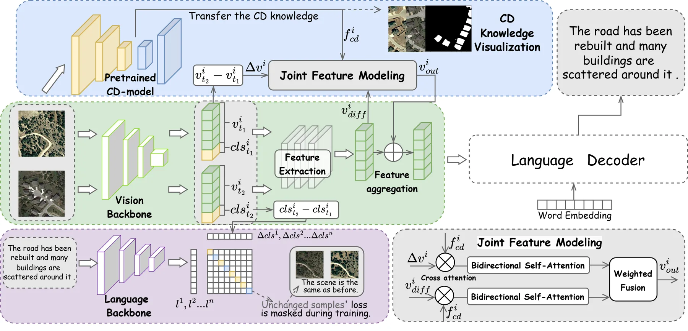
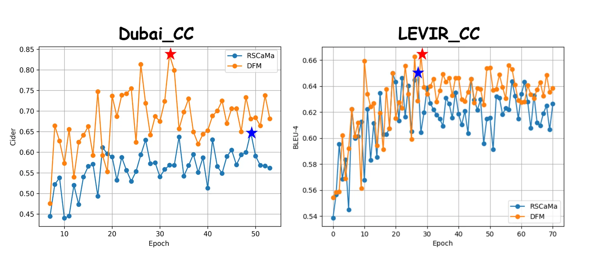
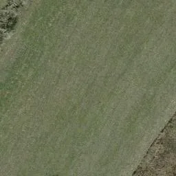
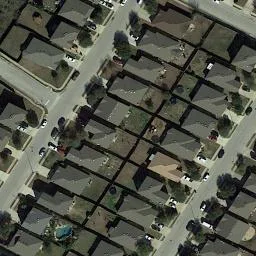
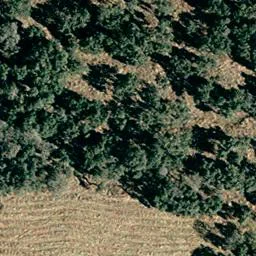

DFM：用于遥感图像变化描述的差异特征建模与文本引导门控对比损失DFM: Difference Feature Modeling with Text-Guided Gated Contrastive Loss for Remote Sensing Image Change Captioning
不涉及几何重建或定位，但与遥感变化检测、城市地图更新和多时相场景理解有边缘相关性。
一句话工作总结
该工作偏遥感语义变化理解，可作为城市级地图更新、变化检测到文本解释链路的参考。
摘要
遥感图像变化描述需要为不同时相影像之间的变化生成文字说明。现有方法多依赖单一自回归生成，容易学习常见词而忽视真正有判别力的图像差异。DFM 重构训练范式，引入文本引导门控对比损失，从文本模态视角引导视觉编码器提取关键变化；同时迁移预训练变化检测模型的稳定知识，并设计联合特征建模模块融合多尺度差异表示。多数据集实验验证了该方法的有效性。
The primary goal of Remote Sensing Image Change Captioning (RSICC) is to automatically generate descriptions of changes between remote sensing images captured at different time points. Existing models still rely on a single autoregressive generation paradigm, which tends to prioritize learning easily generated vocabulary over capturing discriminative differences between images. To address this, we reframe the training paradigm and propose a novel Difference Feature Modeling (DFM) framework. Specifically, we introduce a Text-guided Gated Contrastive Loss (TGCL) to guide the vision encoder to extract critical features from a text-modal perspective. Additionally, we incorporate a pre-trained Change Detection model to transfer stable change detection knowledge. In order to further enhance the representation, we design a Joint Feature Modeling (JFM) module to achieve the fusion of multi-scale difference representations, thereby capturing comprehensive spatiotemporal variations between multi-temporal images. Extensive experiments on multiple datasets demonstrate the effectiveness of our approach.
中文解读摘录
图表/页面预览

{kind=link}

{kind=link}

{kind=link}

{kind=link}

{kind=link}
